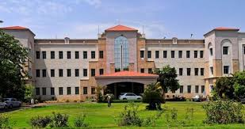
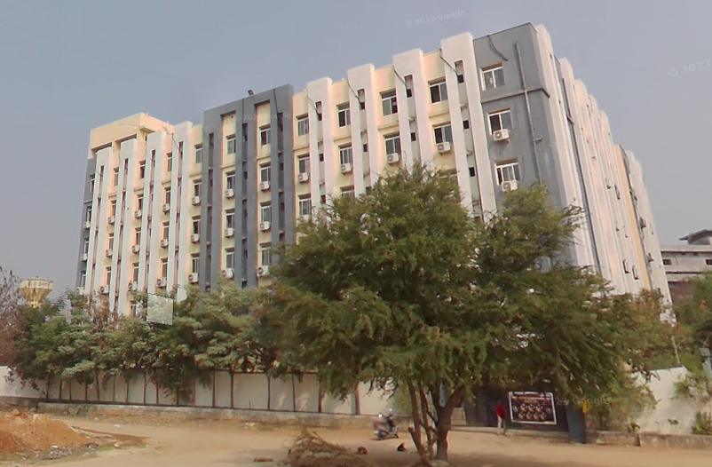

Education
2022-Present
BTech CSE(N)
Kakatiya Institute of Technology and Science
I am pursuing Bachelor of Technology in computer Science and Engineering From Kakatiya Institute Of Technology and Science
2020-22
Intermediate(MPC)
Sri Chaitanya Jr College
I have Completed My Intermediate in Sri chaitanya Under Maths Stream with 93%.